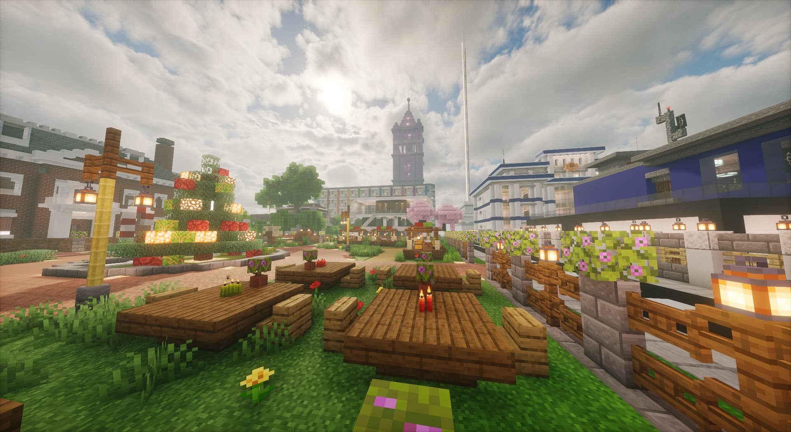
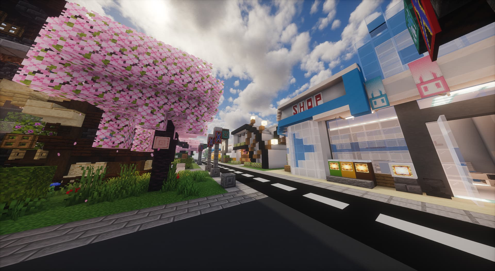
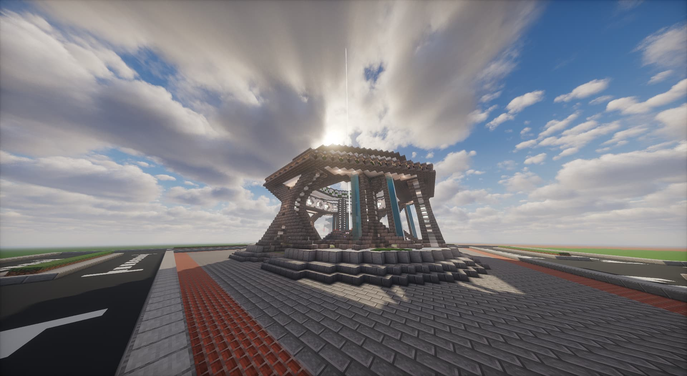
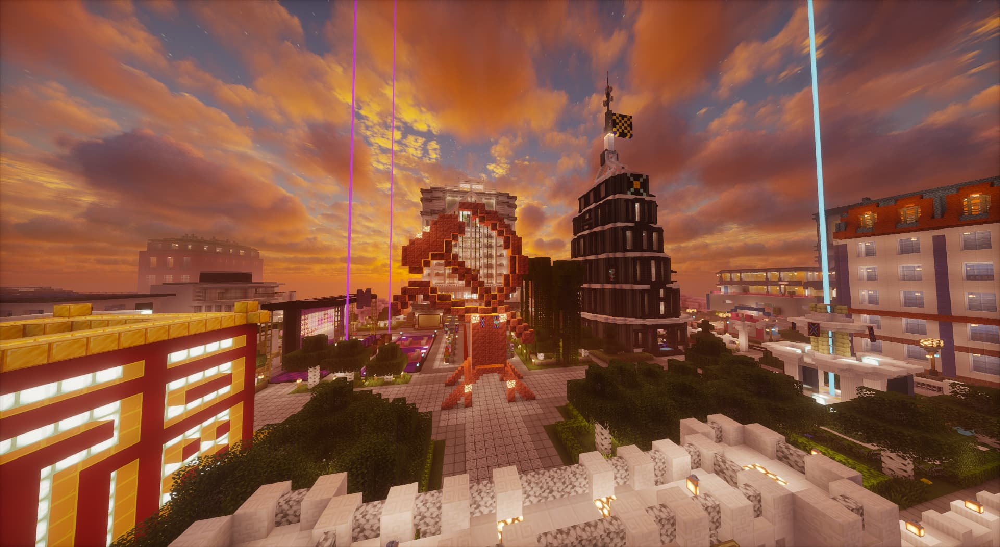
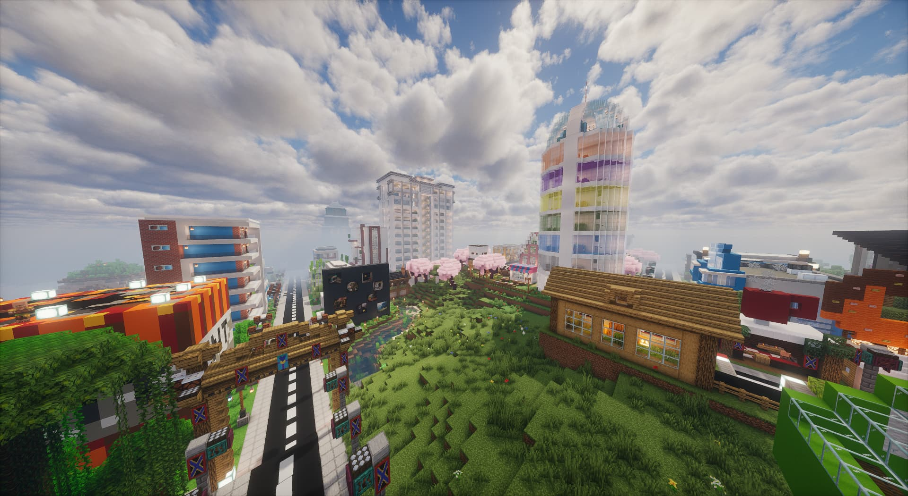

JOINT EXPERIMENTAL NEW AREA

探索 · 建设 · 创新 · 共享
面向所有建造者的联合世界

笃行・深耕・同心・逐光
赠予每一位怀揣热爱的建造者

求索・雕琢・突破・相伴
方块之间藏着无限理想与远方

构思・搭建・革新・共生
坚持创作，终会遇见属于自己的风景

沉淀・创造・携手・前行
心怀热爱，便不惧前路漫长
联合实验新区 · 职能部门
联合实验新区由多个职能部门协同运营，保障新区的建设与发展。
新区顶层设计核心部门，统筹全域空间发展蓝图，总体规划与战略决策。
新区实体施工执行主体，承接规划落地全部建造任务。
城市公共资产长效运维主管，保障建设项目配套稳定运行。
全域路网与交通体系专属管理机构。
城市生态景观专项建设与养护部门。
新区水系、水资源开发专项工程部门。
让世界慢下来
NOW PLAYING
联合实验新区音乐角
点击播放，开启音乐